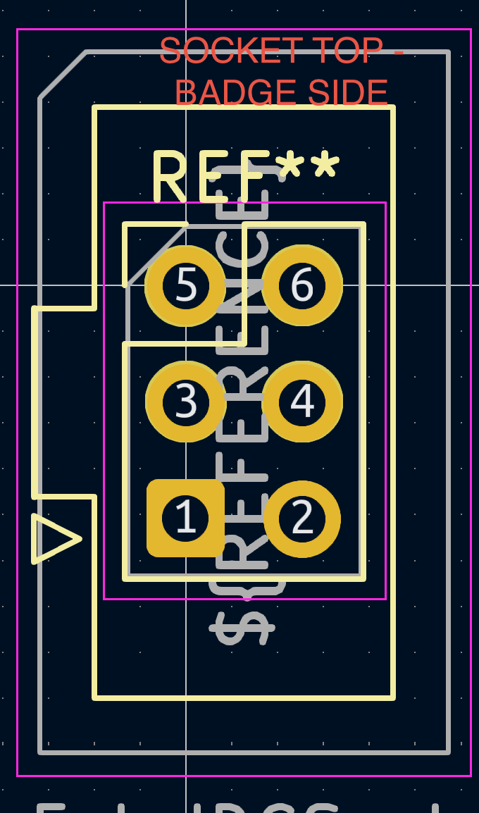
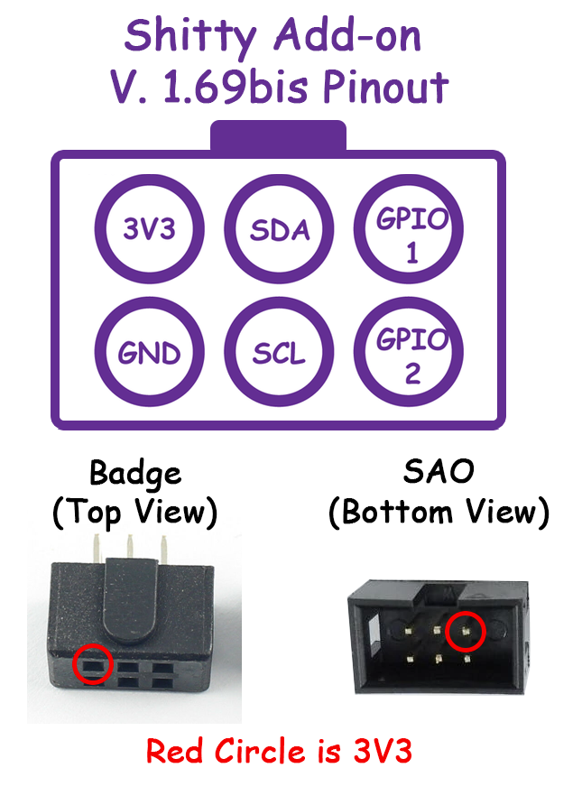

Attendees modify existing badges or create their own from scratch, adding unique features and personalizing them. [source]
Some badges include interactive features like cryptographic puzzles, games, wireless connectivity, or unique designs such as a clock or a mini-quadcopter. [source]
Puzzles and games have been an increasingly common means of grounding the badges in a contest or community building exercise. [source]
Badgelife provides an opportunity for hardware engineers and hobbyists to learn new skills in product design, manufacturing, and hacking—often with a tight deadline. [source]

Many people attend conferences, especially DEF CON, with the primary goal of collecting and trading badges. [source]
Badgelife fosters a sense of community and camaraderie among creators and attendees, with badge creation often becoming a central part of the conference experience.
It creates shared experiences, conversations, and connections around hardware hacking and artistic expression. [source]
It all started with DEF CON 2005, when Joe Grand created the first electronic badge.

Arduino's entire dev environment—the IDE, libraries, bootloader—made selling this stuff niche but easy if you were developing hardware, firmware, and TUTORIALS on how to get started.
In fact, the author owned more of Limor's boards than actual Arduinos by a longshot—the 'Boarduino' came without headers and could be soldered into any manner of thing at much less cost. Part of that was the tutorials and support that allowed learning how to use the boards in a stripped-down manual.

I found my own version of 'badgelife' around 2005/2006 through Burning Man, with a camp called Imagenode. We called them blinkies.

They were PCBs with LEDs and patterns. Later versions had SD card readers, PC-based GUI pattern programmers, and RGB LEDs.
As Jesse Lackey recounts: [source]
"Blinkies 2004 era - ummmmmmm. Not that much around; at that time of course getting cheapo PCBs made in China was pretty uncommon, there was no such thing as an arduino, etc. A lot fewer resources in general.
If I recall correctly we (Todd & imagenode people) did it as a fundraiser, and in order for imagenode people to help assemble them everything is through-hole, with parts on both sides. Very labor intensive, and I think others were soldering in a tech corner of a dome/large tent onsite to finish! And to do some repairs etc.
I was doing Leo work, and the orange LEDs in the 2004 blinky either came from ones Leo found for a project, or we found them and Leo used them for "hive", which is a collection of many (30? 80?) of these computer controlled.
The 2004 blinky was done on cheap as possible pcb fab, no soldermask or silkscreen, which also gave it a uniqueness/DIY appropriate for bman.
If I recall correctly, we had an easter egg, something like the 100th time you turn it on it scrolls 'Designed by very smart monkeys' or something like that :)"


Step 2: PCB Layout - Put the footprints for each device where they need to go, connect traces and add labels

Step 3: Based on the board layout files, you remove the copper from the PCB copper clad that you don't want. [source]

This can be done by coating the board in etch resist and hand dissolving the unwanted copper in a ferric-chloride acid bath, or even using a fiber laser
SAO Standard Pinout
The SAO connector uses a 2x3 pin header with standardized pinout for power and I2C communication.
Badge Socket (Top View)
SAO Header (Top View)

SAO Pinout Reference (by Brian Benchoff)
